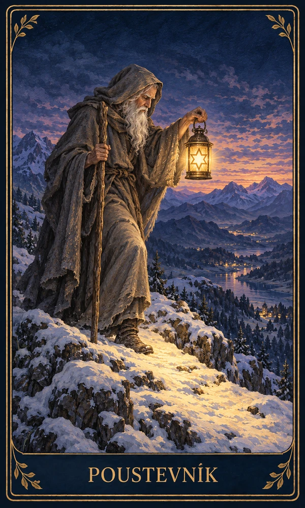
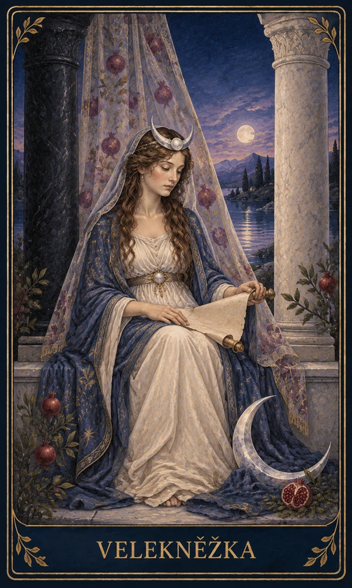
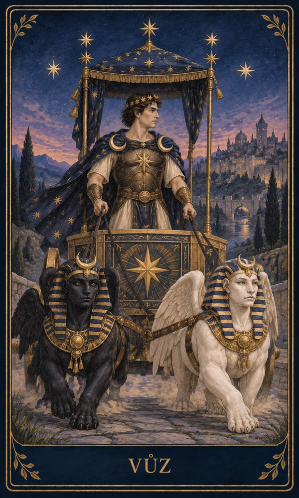

1
Minulost
1
Minulost
Co ovlivnilo současnou situaci, jaký vzorec se opakuje a co už nemusíte nést dál.
Minulost, přítomnost a další krok v jednom výkladu. Celý rozklad je součástí Premium a před výkladem vyžaduje účet. Přihlášený uživatel bez Premium si může jednou denně zobrazit ukázku první karty.



Tříkartový výklad je užitečný hlavně tím, že nedá jen symbol, ale ukáže vztah mezi tím, co doznívá, co je teď živé a co je nejbližší krok.
1
Minulost
Co ovlivnilo současnou situaci, jaký vzorec se opakuje a co už nemusíte nést dál.
2
Přítomnost
Kde jste teď, co je skutečně aktivní a jaký detail by neměl zůstat bez povšimnutí.
3
Další krok
Ne pevná budoucnost. Spíš nejbližší směr, který dává smysl, když vezmete v úvahu první dvě karty.
Jedna karta je rychlý signál. Tři karty už pomáhají rozlišit, jestli řešíte starý příběh, aktuální tlak nebo reálný další krok.
Co se mezi vámi opakuje, co je živé teď a jaký krok je zdravější než čekání v napětí.
Kde vás drží minulá zkušenost, co vyžaduje pozornost a jaký praktický krok posune situaci.
Když cítíte, že se něco vrací, ale ještě nevíte, co přesně si z toho vzít.
Tříkartový výklad je střed mezi rychlou kartou dne a hlubokým rozkladem. Začněte tam, kde je otázka dnes nejjasnější.
Ne. Celý tříkartový výklad je v Premium a vyžaduje účet. Bezplatně a bez registrace můžeš použít tarot ANO/NE nebo kartu dne.
Minulost, přítomnost a další krok. Pomáhají číst situaci v souvislostech.
Když chcete pochopit opakující se vzorec, ne jen rychlý symbol dne.
U složitých otázek, kde potřebujete víc pozic, skryté vlivy a širší obraz.